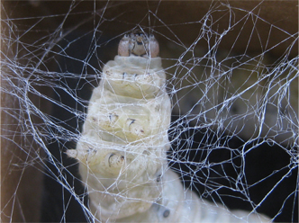
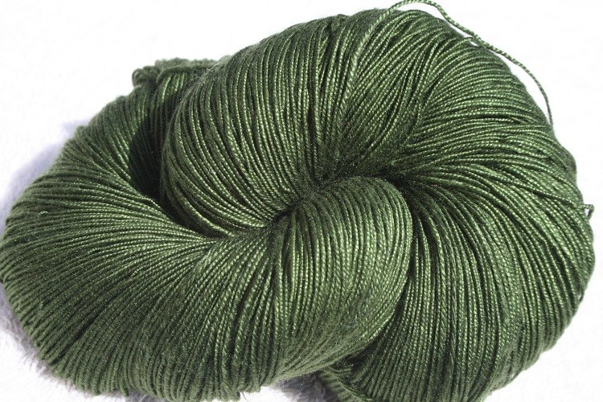

Silk is a natural fibre and was amongst the earliest fibres discovered by man with others being wool, hemp, linen and cotton. Silk is a fibroin made of proteins secreted in the fluid state as single filament by a caterpillar, popularly known as 'silkworm'. These silkworms feed on the selected food plants and spin cocoons as a 'protective shell' to perpetuate the life. Silkworm has four stages in its life cycle viz., egg, silkworm, pupa and moth. Man interferes this life cycle at the cocoon stage to obtain the silk, a continuous filament of commercial importance, used in weaving of the dream fabric.
Life Cycle of the Silk Worm
Silk has several natural properties that make it distinct from all other fibres both natural and man made. It has a natural sheen, and inherent affinity to rich colours, high absorbance, light weight yet stronger than a comparable filament of steel, poor heat conduction that makes it warm in the winter and cool in summer, low static current generation, resilience and an excellent drape. Various types of silks produced for a diverse range of applications like fashion apparel, furnishings and upholstery, carpets and rugs and silk is also blended with other fibres to manufacture fabrics. Another important uses of silk are the sewing, knitting and embroidery sectors among others. .
